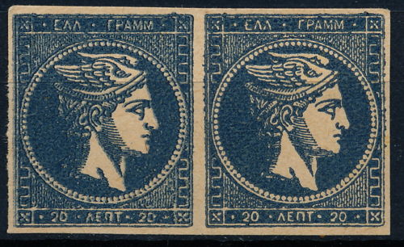
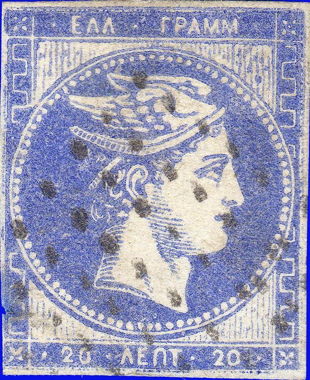

Other AliSaffi forgeries
Return To Catalogue - Greece - Greece Large Hermes Head forgeries, part 1; Spiro etc. - Greece Large Hermes Head forgeries, part 3; Fournier - Greece Large Hermes Head forgeries, part 4; Imperato
Note: on my website many of the
pictures can not be seen! They are of course present in the
catalogue;
contact me if you want to purchase the catalogue.
The forger A.Alisaffi (originally from Constantinopel, but working in Paris) also made forgeries of these stamps. He seems to have used many different dies (31 varieties according to V.E.Tyler's book); including prints in non-existing colors and double prints.

Most likely Alisaffi forgeries. They resemble very much the image
on http://en.wikipedia.org/wiki/File:LHH_-_Faux_d%27Alissafi.jpg
Other AliSaffi forgeries
According to https://en.wikipedia.org/wiki/A._Alisaffi forgeries of Alisaffi were also sold by Fournier (and thus some ended up in the Fournier Album).

Alisaffi forgery of the 20 c value, but found in a Fournier Album.
I've been told that this is a die-proof forgery of the 20 l value made by Oneglia:


Oneglia 'die proof' forgery. I'm not sure if this is true since I
have seen very similar prints (one single stamp) which I was told
are Paris Exhibition reprints made in 1900.
Since these forgeries appear to have been engraved, they have a special 'sharply printed look' to them:
Other Oneglia forgeries (made in 1890):

The above are Oneglia (Panelli) engraved forgeries. The 1861
'Paris' 1L, 2L, 5L, 10L, 20L, 40L & 80L values, then the 10L
with figure on reverse. Finally the 1876-77 30L & 60L (2,
both papers)
values (images obtained from a Sandafayre auction).


(look at the strange '60' in this forgery)
In my opinion, in all the above Oneglia forgeries, the zig-zag pattern on the left hand side begins slightly too high at the bottom when compared to a genuine stamp.
Sperati forgeries, images obtained from a Sotheby auction
The forger Sperati made a forgery of the 1 l value. Sometimes Sperati used genuine stamps of lower value on which he printed the forged design (in those cases the cancel is genuine). In other cases, he applied a forged numerical cancel "9", "18", or "32" (see images above or also http://en.wikipedia.org/wiki/File:LHH_-_Faux_de_Sp%C3%A9rati.jpg).



Engraved(?) forgeries. In my view, there are not enough lines in
the corners.


Forgeries of the 1 l. In my opinion, the shading on the cheek is
not well done.

Block of four 10 l forgeries, apparently very dangerous
forgeries.


{kind=link}
{kind=link}
{kind=link}